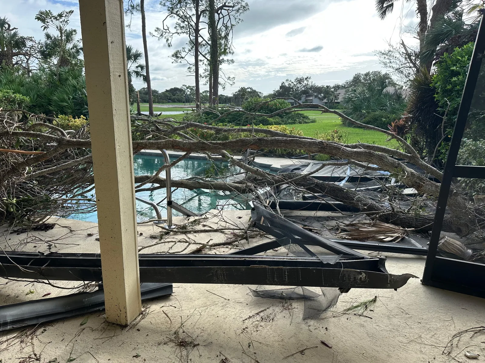

Why Clients Call
Storm preparedness made easier to scan.
- Emergency board up for openings and exposed areas
- Roof tarp service to help limit active water intrusion
- Preparation and response guidance for storms and hurricanes
Cinergy Restoration helps property owners prepare for storm season with emergency board up, roof tarp service, temporary protection, and fast-response planning for hurricane and storm damage risks across Broward County.
Whether you are getting ready for a named storm, protecting a property after sudden wind damage, or looking for help with post-storm stabilization, our goal is to secure the structure quickly and reduce the chance of additional interior water damage.

This real storm-damage photo shows how fallen trees, broken screening, and exposed exterior areas can quickly create larger cleanup and water-intrusion problems. Fast board up service, roof tarp installation, and post-storm stabilization can help reduce additional damage while you plan the next repair steps.
For homes, condos, HOAs, and commercial properties, early action can make emergency response more organized and help protect interiors, contents, and structural areas after hurricane-force wind and debris impact.
If a roof is already compromised or exposed, temporary protection can help reduce additional water intrusion. A site-specific inspection is the best way to confirm the right next step.
Board up can be a practical option for vulnerable openings, damaged areas, and properties that need temporary storm protection before severe weather arrives.
Explore services that commonly go with storm preparedness before or after hurricanes and severe weather.